03/10/2018 — Nhồi máu cơ tim thành trước ở bệnh nhân có nhịp tạo nhịp bị bác sĩ tim mạch gạt bỏ, bệnh nhân tử vong
Bản dịch tiếng Việt của bài "Anterior MI in paced rhythm, dismissed by cardiologist, patient died." – Dr. Smith’s ECG Blog. Giữ nguyên toàn bộ 13 hình ảnh của bản gốc.
Ca này do một nhân viên cấp cứu ngoài viện rất tinh ý của Hennepin cho tôi xem.
Dù ca này đến từ một nhân viên cấp cứu ngoài viện của Hennepin, bệnh nhân không được đưa đến Hennepin County Medical Center.
Một lưu ý khác:
Một người đã viết trên Twitter rằng anh ấy thất vọng vì “tư tưởng bè phái” của bài viết này. Đây là câu trả lời của tôi.
“Đây không phải là tư tưởng bè phái. Điều thiết yếu là phải chỉ ra rằng bác sĩ tim mạch cũng có thể sai, và phải luôn đứng về phía bệnh nhân. Điều quan trọng là bác sĩ tim mạch cần nhận ra rằng một nhân viên cấp cứu ngoài viện có thể thấy những điều mà họ không thấy. Tôi hy vọng làm dịu bớt sự kiêu ngạo mà rất nhiều người viết thư và trò chuyện với tôi thường xuyên gặp phải.”
Ca bệnh
Một bệnh nhân cao tuổi bị đau ngực cấp và đã gọi 911. Nhân viên cấp cứu ngoài viện ghi điện tâm đồ ban đầu sau đây ở thời điểm 0:
Kết quả đọc bằng máy tính (xem bên dưới) không đưa thêm nhận xét nào ngoài máy tạo nhịp thất.

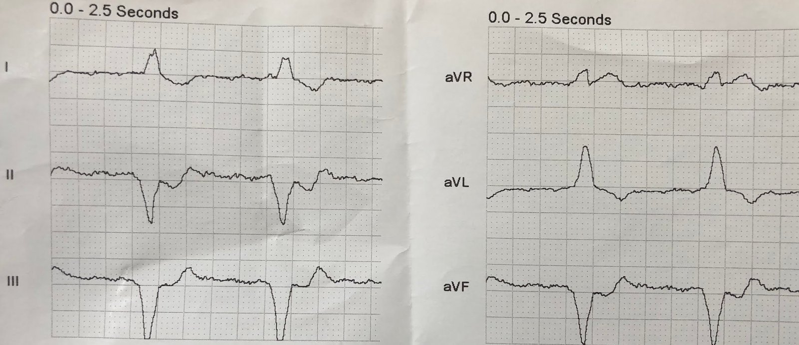

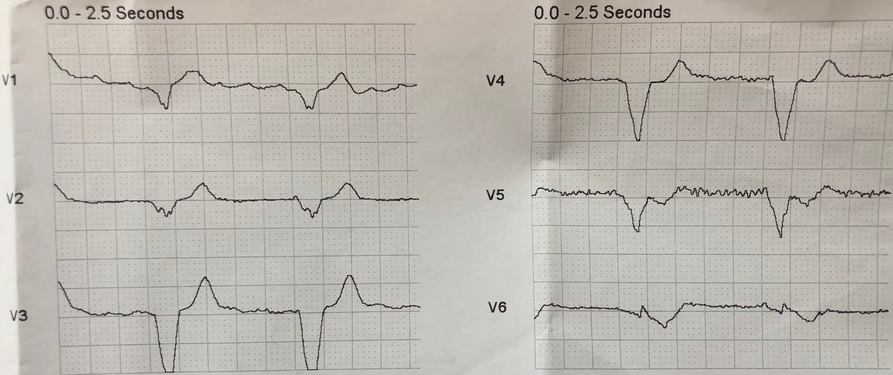

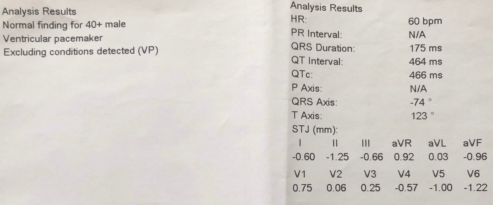
Khó nhận ra các gai tạo nhịp, nhưng máy tính đã phát hiện được chúng.
Vậy hãy cứ biết rằng đây là nhịp tạo nhịp thất.
Vì bạn không thấy được các gai tạo nhịp, làm sao bạn biết đây là nhịp tạo nhịp nếu không có kết quả đọc bằng máy tính?
Trả lời: Có phức bộ QRS rộng đều, trông giống LBBB nhưng không có sóng P (tức là có rung nhĩ nền hoặc nhĩ không hoạt động). Khả năng duy nhất là nhịp tự thất gia tốc (AIVR) và nhịp tạo nhịp.
Nhân viên cấp cứu ngoài viện rất lo ngại về ST chênh lên (STE) và sóng T đồng hướng ở aVR, cùng ST chênh xuống đồng hướng dốc xuống ở II, III, aVF, cũng như ở V5 và V6.
Khi anh ấy cho tôi xem, tôi nói “Ôi, trông như tắc mạch vành cấp. Chuyện gì đã xảy ra?”
Nhân viên cấp cứu ngoài viện ghi thêm một điện tâm đồ 12 chuyển đạo trên đường vận chuyển, 13 phút sau:

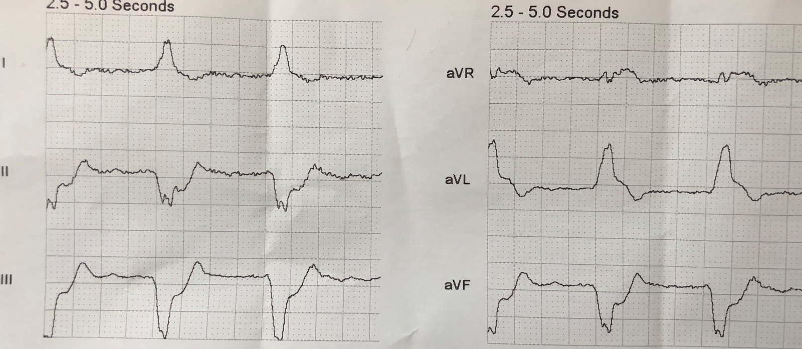

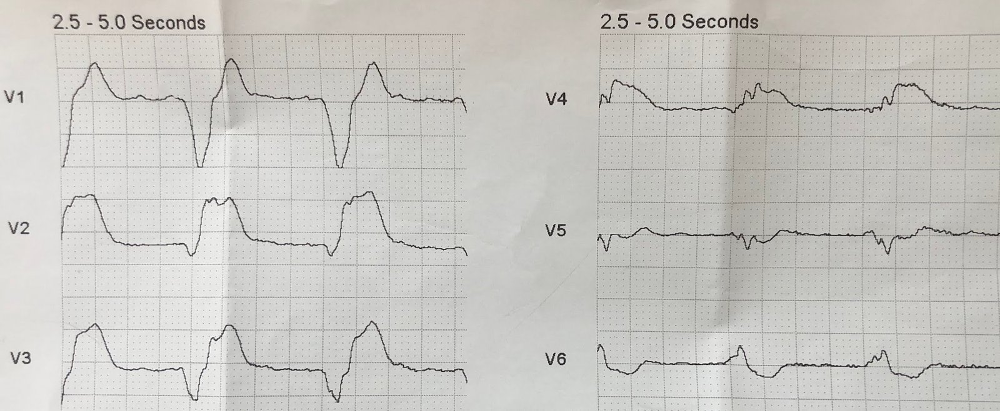

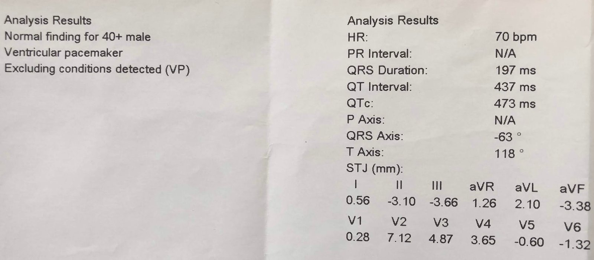
Lúc này có STE đồng hướng ở aVR, aVL và V4, kèm ST chênh xuống đồng hướng soi gương ở II, III và aVF, và STE ngược hướng quá mức xét theo tỷ lệ ở mức cực độ tại V2 và V3.
Hình ảnh này là chẩn đoán tắc LAD đoạn gần, hoặc có thể là thân chung động mạch vành trái.
Khoảng 10 phút sau, và ngay trước khi đến bệnh viện (KHÔNG phải Hennepin!), anh ấy ghi thêm một điện tâm đồ nữa:
thời điểm 20 phút

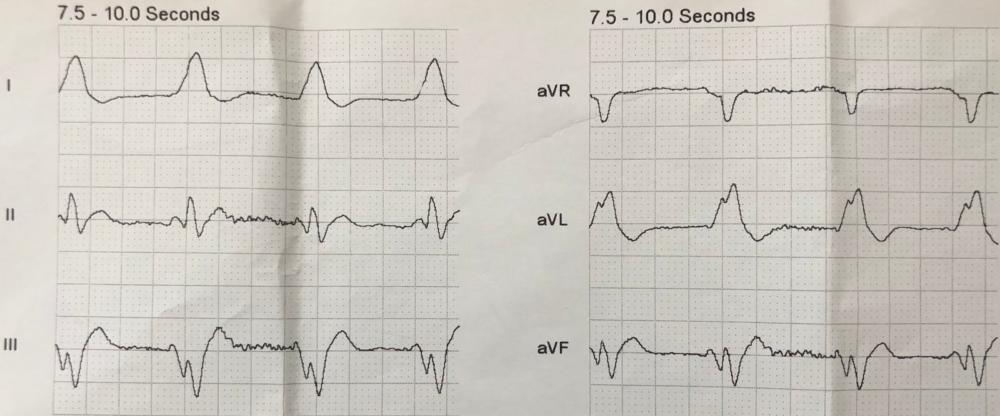

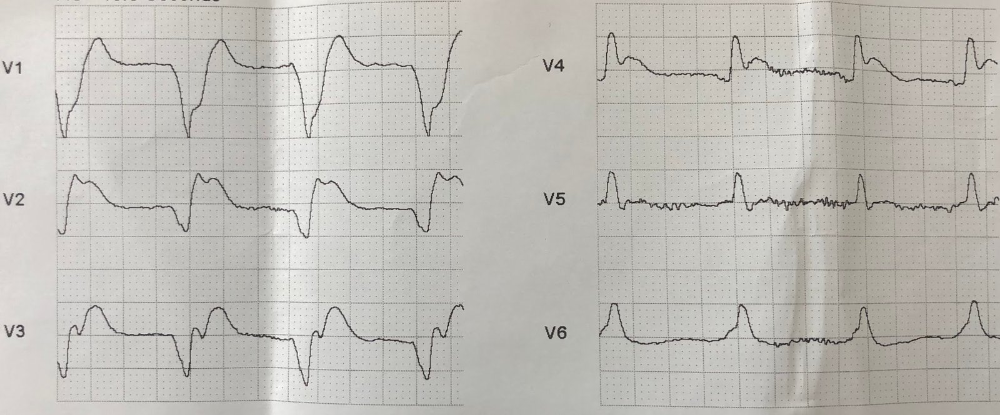

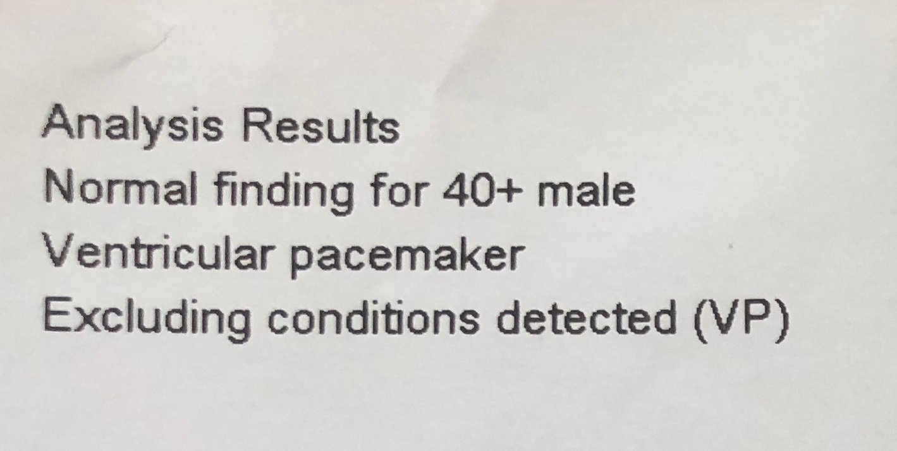
Khi đến nơi, bệnh nhân rơi vào rung thất.
Vì một lý do tôi không rõ, bác sĩ can thiệp có mặt tại khoa cấp cứu (ED). Ông ấy từ chối lắng nghe nhân viên cấp cứu ngoài viện và tin chắc rằng điện tâm đồ là do tăng kali máu, và rằng không thể chẩn đoán nhồi máu cơ tim cấp khi có nhịp tạo nhịp.
Không thể chia sẻ chi tiết ở đây, nhưng chỉ cần nói rằng việc không nhận ra nhồi máu cơ tim cấp do tắc khi có nhịp tạo nhịp thất đã góp phần dẫn đến một kết cục xấu.
Bình luận
Có vẻ như đây là một ngộ nhận phổ biến rằng không thể chẩn đoán nhồi máu cơ tim khi có nhịp tạo nhịp. Sau khi đưa ra một điện tâm đồ nhịp tạo nhịp cho thấy rõ nhồi máu cơ tim cấp, K. Wang đã yêu cầu độc giả diễn giải.
Đây là cuộc khảo sát: https://www.medscape.com/viewarticle/856890_2

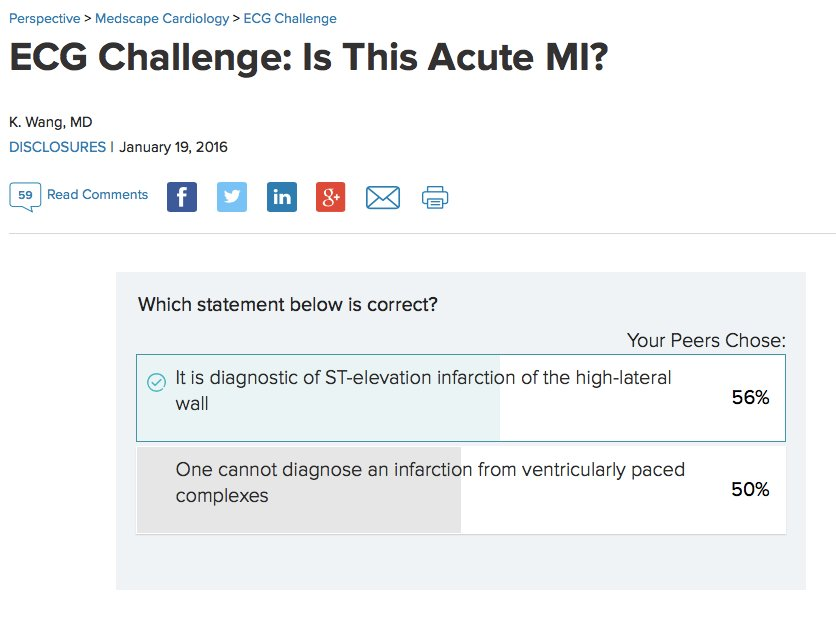
Dù đúng là nhồi máu cơ tim cũ, chẩn đoán dựa vào sóng Q, bị LBBB và nhịp tạo nhịp che lấp rất nhiều, nhồi máu cơ tim cấp do tắc dường như có thể chẩn đoán khá dễ dàng, gần như ngang với khi dẫn truyền bình thường. Khi dẫn truyền bình thường (tức là không có LBBB hay nhịp tạo nhịp), nhồi máu cơ tim do tắc mạch vành cấp (OMI) được chẩn đoán trong khoảng 75% số ca. 25% còn lại không được chẩn đoán cho đến khi được khẳng định bằng troponin và chụp mạch vành vào ngày hôm sau.(1)
1. Khan AR, Golwala H, Tripathi A, và cs. Impact of total occlusion of culprit artery in
acute non-ST elevation myocardial infarction: a systematic review and meta-analysis. European Heart Journal 38(41):3082-3089; ngày 1 tháng Mười Một năm 2017. Trong nghiên cứu này, trong số 40.000 bệnh nhân NSTEMI, có 10.000 người bị OMI mà mãi đến ngày hôm sau mới được chẩn đoán.
Chúng tôi đã chứng minh rằng tắc mạch vành cấp – ACO (OMI) thực sự có thể được chẩn đoán khi có nhịp tạo nhịp với độ nhạy và độ đặc hiệu tương đương. Tuy nhiên, điều quan trọng là phải nhận ra rằng nhiều OMI có thể khó chẩn đoán ở bất kỳ nhịp nào trên điện tâm đồ, và NOMI (nhồi máu cơ tim không do tắc) thường không thể chẩn đoán được trên điện tâm đồ.
Đây là bản tóm tắt của chúng tôi tại SAEM 2018. Chúng tôi đang viết bản thảo ngay lúc này, với nhiều bệnh nhân được đưa vào nghiên cứu hơn.
Tiêu chuẩn Sgarbossa cải biên theo Smith chẩn đoán chính xác tắc mạch vành cấp ở bệnh nhân khoa cấp cứu
có nhịp tạo nhịp thất.
Kenneth W. Dodd1
, Deborah L. Zvosec2
, Michael A. Hart1
, Laura Bannister3
, Gary Mitchell4
, George Glass5
, Brooks Walsh6
,
Harvey P. Meyers7
, David Miranda8
, James Corbett-Detig9
, Vaishal M. Tolia10, Louise Cullen11, Stuart Zarich6
, Sally Aldous12,
William Brady5
, Timothy Henry13, Adam J. Singer14, Stephen W. Smith15, và Nhóm tác giả nghiên cứu PERFECT 1
Hennepin County Medical Center, 2
Minneapolis Medical Research Foundation, 3
Bối cảnh: Tiêu chuẩn Sgarbossa cải biên theo Smith (MSC) thường được khuyến cáo để chẩn đoán tắc mạch vành cấp (ACO; tương đương STEMI) trong
bối cảnh nhịp tạo nhịp thất (VPR). MSC dương tính nếu thỏa một trong các tiêu chuẩn sau ở ít nhất 1 chuyển đạo: ST chênh lên (STE) đồng hướng ít nhất 1
mm, ST chênh xuống đồng hướng ít nhất 1 mm ở V1-V3, hoặc tỷ số ST/S nhỏ hơn -0,25 ở các chuyển đạo có STE ít nhất 1 mm. Chúng tôi giả thuyết rằng MSC sẽ có độ nhạy cao hơn
trong chẩn đoán ACO khi có VPR so với tiêu chuẩn Sgarbossa gốc.
Phương pháp: Nghiên cứu PERFECT (#NCT02765477) là một nghiên cứu hồi cứu, quốc tế, tại 16 trung tâm, trên các bệnh nhân khoa cấp cứu từ 1/2008 – 12/2016 có VPR trên
điện tâm đồ và triệu chứng của hội chứng vành cấp (ACS). Dữ liệu từ mười cơ sở được trình bày ở đây. Nhồi máu cơ tim cấp (AMI) được định nghĩa theo Định nghĩa toàn cầu
về AMI lần thứ Ba. Trong phân tích này, ACO được định nghĩa là có bằng chứng huyết khối mạch vành trên chụp mạch kèm troponin I tim (cTn-I) đỉnh ít nhất 10 ng/mL hoặc cTn-T ≥ 1 ng/
mL. Các bác sĩ được làm mù đã thẩm định báo cáo chụp mạch về tổn thương mạch vành và điểm dòng chảy TIMI (thrombolysis in myocardial infarction). Các bác sĩ khác, cũng được làm mù,
thực hiện các phép đo điện tâm đồ. Người trích xuất dữ liệu đã qua đào tạo ghi dữ liệu vào biểu mẫu chuẩn hóa. Thống kê bằng kiểm định Mann Whitney U, Chi bình phương và McNemar.
Kết quả: Có 46 lượt khám trong nhóm ACO (tuổi trung vị 76 [khoảng tứ phân vị (IQR) 65-82], 36 (76%) nam) và 79 trong nhóm Không AMI (tuổi trung vị 70 [61-75], 48
(61%) nam). Với ACO, cTn-I đỉnh trung vị là 65 ug/L [IQR 35-239] và cTn-T là 3,3 ng/mL [IQR 2,2-8,3]. Với nhóm Không AMI, cTn-I đỉnh trung vị là 0,015 ug/L
[IQR 0-0,09]. Với ACO, độ nhạy và độ đặc hiệu của MSC so với tiêu chuẩn Sgarbossa gốc lần lượt là 83% (KTC 95% 68-91) so với 63% (48-76; p nhỏ hơn 0,005)
và 99% (92-100) so với 99% (92-100; p = 0,5). Trong phân tích phân nhóm đã xác định trước ở các bệnh nhân có dòng chảy TIMI 0-1 và cTnI đỉnh ít nhất 10 ug/L hoặc cTnT đỉnh ít nhất 1 ng/mL (n = 29), độ nhạy là 87% (69-96) với MSC so với 58% (39-75) với tiêu chuẩn Sgarbossa gốc (p nhỏ hơn 0,05).
Kết luận: Đây là nghiên cứu lớn nhất trên bệnh nhân có VPR và ACO được chứng minh bằng chụp mạch. MSC có độ nhạy và độ đặc hiệu cao trong
chẩn đoán ACO ở bệnh nhân đến khoa cấp cứu có VPR và triệu chứng của hội chứng vành cấp.

===================================
BÌNH LUẬN CỦA TÔI, bởi KEN GRAUER, MD (3/10/2018):
===================================
Các bản ghi nhịp tạo nhịp tốt đến mức nào trong việc phát hiện ACO (tắc mạch vành cấp – Acute Coronary Occlusion)? Câu trả lời là: tốt hơn nhiều so với những gì quá nhiều bác sĩ lâm sàng vẫn còn nghĩ từ trước đến nay. Mục tiêu của bài blog này (và của nghiên cứu đang tiến hành của Dodd, Smith và cs. — đã trích dẫn ở trên) là nâng cao nhận thức về sự cần thiết phải đặc biệt chú ý đến điện tâm đồ tạo nhịp ở bệnh nhân có triệu chứng mới — vì thường xuyên một cách đáng ngạc nhiên, ACO có thể được nghi ngờ trên điện tâm đồ dù có tạo nhịp tim. Và, trong những ca như bệnh nhân cao tuổi đau ngực mới khởi phát được trình bày ở đây — chẩn đoán xác định STEMI cấp đôi khi dễ dàng đến bất ngờ.
- Bản tóm tắt của Dodd, Smith và cs. (đã trích dẫn ở trên) tập trung vào việc áp dụng các tiêu chuẩn định lượng trong thang Sgarbossa cải biên theo Smith (MSC).
- Bình luận của tôi nhắm đến đánh giá định tính các thay đổi ST-T trên bản ghi nhịp tạo nhịp. Tôi chọn 2 điện tâm đồ đầu tiên trong ca này để minh họa các điểm này (Hình 1).

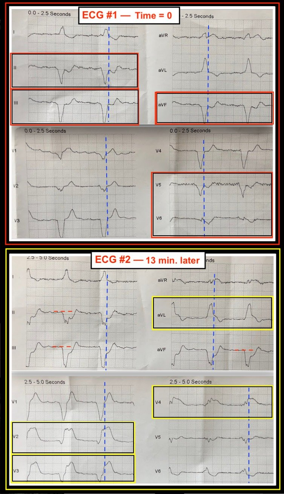
Cách dễ nhất để cải thiện khả năng nhận ra các dấu hiệu đáng ngờ trên điện tâm đồ của một nhịp tạo nhịp hoàn toàn là: i) Nhận ra đây là một quần thể có tỷ lệ hiện mắc cao bệnh mạch vành (tức là suy cho cùng, những bệnh nhân này có máy tạo nhịp vĩnh viễn); và, ii) Lắng nghe bệnh nhân. Nếu một bệnh nhân có máy tạo nhịp vĩnh viễn than phiền về các triệu chứng mới khởi phát đáng lo ngại — thì trước cả khi bạn nhìn vào điện tâm đồ — hãy biết rằng bạn đang đối diện với một quần thể có tỷ lệ hiện mắc rất cao về khả năng có bệnh mạch vành tắc cấp.
- LƯU Ý: Dù điều trên nghe có vẻ hiển nhiên — tôi vẫn kinh ngạc vì có biết bao nhiêu bác sĩ lâm sàng trên nhiều blog điện tâm đồ quốc tế mà tôi thường xuyên tham gia vẫn còn “mắc kẹt” trong lối nghĩ rằng không thể thấy thay đổi cấp trên điện tâm đồ ở một bản ghi nhịp tạo nhịp — và vì thế phớt lờ người bệnh trước mặt đang mô tả các triệu chứng điển hình của hội chứng vành cấp. Phát hiện các dấu hiệu điện tâm đồ bất thường dễ hơn nhiều khi bạn chủ động tìm kiếm chúng!
- Cách tiếp cận định tính của tôi khi đánh giá điện tâm đồ của bản ghi nhịp tạo nhịp ở bệnh nhân đau ngực mới khởi phát như sau — Hãy nghi ngờ khi bạn thấy những dấu hiệu ST-T lẽ ra không nên có ở đó …
========================
Các dấu hiệu điện tâm đồ lẽ ra không nên có ở đó:
Để dễ nhận ra độ lệch của đoạn ST (chênh lên hoặc chênh xuống) — tôi đã thêm các đường chấm màu XANH trong Hình 1, vẽ song song với các đường kẻ ô đậm. Các đường chấm xanh này tương ứng với điểm kết thúc của phức bộ QRS và điểm khởi đầu của đoạn ST. Hãy lưu ý những điều sau ở Điện tâm đồ #1 (bản ghi PHÍA TRÊN trong Hình 1):
- Hình dạng của sóng ST-T ở các chuyển đạo thành dưới trên điện tâm đồ #1 trông lạ. Điều này thấy rõ nhất ở chuyển đạo II, nhưng cũng hiện diện rõ ở chuyển đạo aVF. Độ dốc của đoạn ST ở các chuyển đạo này rõ ràng đi xuống, và sóng T trông hai pha. Đây là những thay đổi lẽ ra không nên có ở đó ở các chuyển đạo có phức bộ QRS âm hoàn toàn như thế này. Việc hình dạng ST-T trông ít bất thường hơn nhiều ở chuyển đạo III có lẽ giải thích cho việc không có ST chênh lên ở chuyển đạo aVL trên điện tâm đồ #1.
- Phải thừa nhận rằng nhiễu và sự thay đổi hình thái từ nhát này sang nhát khác khiến việc đánh giá thay đổi ST-T trong Hình 1 khó khăn hơn. Nhưng ST-T ở chuyển đạo V5 giống với ST-T ở chuyển đạo II và aVF — và ở một chuyển đạo có phức bộ QRS âm hoàn toàn, đoạn ST âm và sóng T hai pha mà chúng ta thấy ở V5 đơn giản là lẽ ra không nên có ở đó. Để so sánh — Lưu ý rằng sóng T ở chuyển đạo V4 của điện tâm đồ #1 dương dù phức bộ QRS âm. Không có lý do gì ST-T lại thay đổi từ chuyển đạo V4 sang V5 như ta thấy ở đây, khi hình dạng QRS âm hoàn toàn tương tự nhau ở 2 chuyển đạo này, trừ khi có thiếu máu cục bộ cấp.
- Có những thay đổi ST-T tinh tế hơn khác trên điện tâm đồ #1 mà tự bản thân chúng có vẻ quá không đặc hiệu để chẩn đoán — nhưng trong bối cảnh có các thay đổi bất thường rõ ràng ở chuyển đạo II, aVF và V5 — lại làm tăng mức nghi ngờ thiếu máu cục bộ cấp của tôi. Những thay đổi này gồm sóng T dương và sóng T âm lớn không tương xứng lần lượt ở chuyển đạo V2 và V6.
- ĐIỀU CỐT LÕI: Tôi không nghĩ hình ảnh điện tâm đồ của bản ghi nhịp tạo nhịp ở điện tâm đồ #1 là xác định cho tắc cấp. Dù vậy, các thay đổi nêu trên ở bản ghi nhịp tạo nhịp của một bệnh nhân đau ngực mới khởi phát rõ ràng khiến tôi nghi ngờ thiếu máu cục bộ cấp — và đáng được tiếp tục theo dõi sát.
========================
13 phút sau — Điện tâm đồ #2 được ghi (bản ghi PHÍA DƯỚI trong Hình 1):
- Lúc này có ST chênh lên rõ rệt ở nhiều chuyển đạo lẽ ra không nên có ở đó. Các chuyển đạo này gồm chuyển đạo aVL; và V2, V3, V4. So sánh hình dạng ST-T ở các chuyển đạo này với 13 phút trước đó trên điện tâm đồ #1 xác nhận không còn nghi ngờ gì rằng tất cả đều là thay đổi cấp.
- Hình ảnh ST-T soi gương đối nghịch với ST chênh lên ở chuyển đạo aVL được thấy ở cả 3 chuyển đạo thành dưới (đường chấm ngang màu ĐỎ trên đường nền đoạn ST ở các chuyển đạo II, III, aVF giúp dễ nhận ra ST chênh xuống soi gương rõ rệt).
- ĐIỀU CỐT LÕI: Dù có tạo nhịp tim — điện tâm đồ #2 là chẩn đoán một STEMI thành trước cấp diện rất rộng. Cần thông tim và tái tưới máu khẩn cấp ngay lập tức.